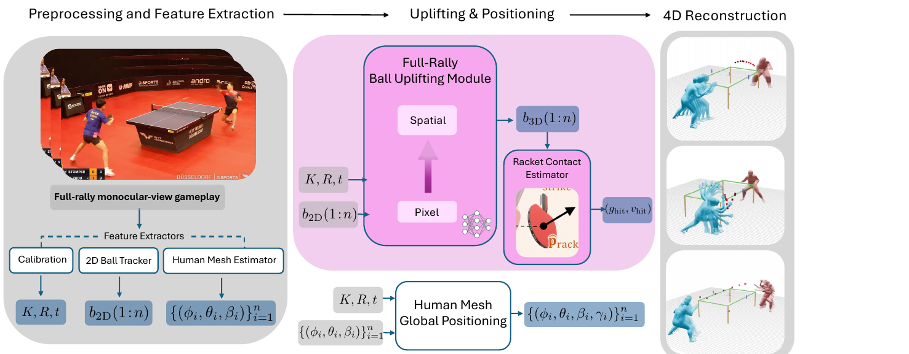

We present TT4D, a large-scale, high-fidelity table tennis dataset. It provides 140+ hours of reconstructed singles and doubles gameplay from monocular broadcast videos, featuring annotations like high-quality camera calibrations, precise 3D ball positions, ball spin, time segmentation, and 3D human meshes over time. This rich data provides a new foundation for virtual replay, in-depth player analysis, and robot learning.
The dataset's combination of scale and precision is achieved through a novel reconstruction pipeline. Prior methods first partition a game sequence into individual shot segments using the 2D ball track, and only then attempt reconstruction. However, 2D-based time segmentation collapses under occlusion and varied camera viewpoints, preventing reliable reconstruction. We invert this paradigm by first lifting the entire unsegmented 2D ball track to 3D through a learned lifting network. This 3D trajectory then allows us to reliably perform time segmentation. The learned lifting network also infers the ball's spin, handles unreliable ball detections, and successfully reconstructs the ball trajectory in cases of high occlusion.
This lift-first design is necessary, as our pipeline is the only method capable of reconstructing table tennis gameplay from general-view broadcast monocular videos. We demonstrate the dataset's fidelity through two downstream tasks: estimating the racket's pose & velocity at impact, and training a generative model of competitive rallies.
Conventional table tennis reconstruction pipelines first perform 2D-based time segmentation of a point and then reconstruct each segment independently. This segmentation is highly sensitive to occlusions and missing detections, which limits scalability. We instead lift the entire unsegmented point to 3D and perform time segmentation and annotation directly in the 3D domain, where the ball trajectory signal is unambiguous.

TT4D is sourced from broadcast table tennis games from 2021 to 2024. It supports general stationary camera poses, singles and doubles gameplay, and video speeds of at least 25 FPS. Each reconstructed point includes camera calibration, a dense 3D ball trajectory, per-frame 3D spin vectors, 3D-derived time segmentation (hits and bounces), racket-contact parameters, and world-aligned 3D human meshes.
| LATTE-MV | TT4D (ours) | |
|---|---|---|
| Source games | 1,017 | 45,946 |
| Reconstructed points | 23,782 | 211,534 |
| Hours of gameplay | 26 | 146 |
| Camera viewpoints | Single fixed pose | General stationary views |
| Singles / doubles | Singles only | Both |
| Per-frame 3D spin | ✗ | ✓ |
| 3D-derived time segmentation | ✗ | ✓ |
Because the 3D trajectory is reconstructed independently of human-pose tracking, the pipeline naturally generalizes to doubles matches, and the final winning shot of each point, which is unrecoverable in 2D-based segmentation pipelines, is reliably reconstructed.
Racket stroke estimation. Direct monocular tracking of the racket is unreliable due to its high velocity, small size, and frequent occlusions. We instead recover the racket's orientation and velocity at impact by solving an inverse control problem: the stroke parameters are optimized so that the simulated post-impact ball trajectory matches the reconstructed 3D trajectory and bounce timing. Against motion-capture ground truth over 92 recorded strokes, this yields a mean orientation error of 26.4° and a velocity error of 0.58 m/s at an average impact speed of 3.72 m/s.
Generative rally model. We train a Flow Matching model on competitive gameplay from TT4D. Generated rallies are physically plausible and match the inter-hit time distribution of real play, capturing the tempo and exchange dynamics of professional table tennis.
Robot learning. TT4D provides the foundation for imitation learning, where a humanoid robot can learn to emulate professional-level strokes and rallies. We demonstrate this by training a motion tracking policy on retargeted motion from the dataset.
@inproceedings{rahmanian2026tt4d,
author = {Rahmanian, Nima and Kienzle, Daniel and Gossard, Thomas and Kalaria, Dvij and Lienhart, Rainer and Sastry, S. Shankar},
title = {TT4D: A Pipeline and Dataset for Table Tennis 4D Reconstruction From Monocular Videos},
booktitle = {Proceedings of the 34th ACM International Conference on Multimedia (MM '26)},
year = {2026},
doi = {10.1145/3767308.3835475},
}